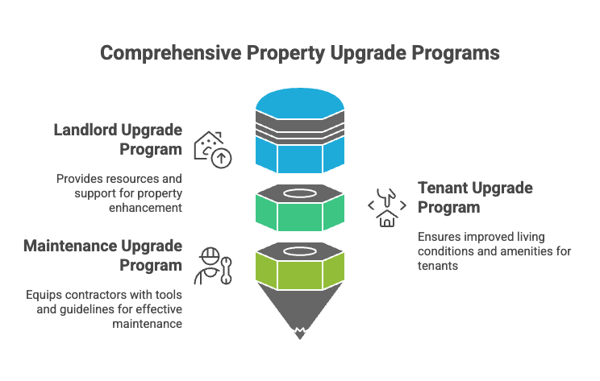
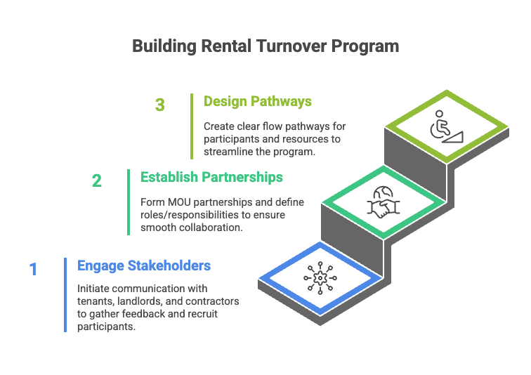
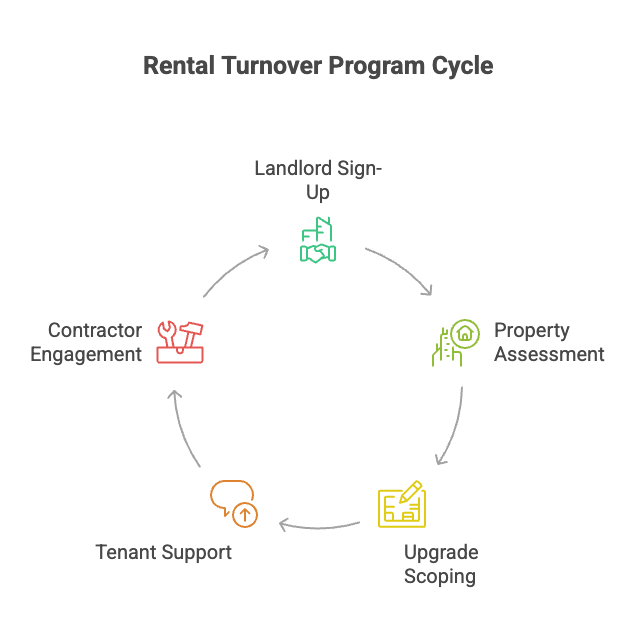

Building community resilience through workforce development and property improvement programs
82%Max Emissions Reduction
23,000Jobs Projected (NC)
21Studies Analyzed
9MPotential US Jobs
Research Question
How can community-oriented residential service systems—supported by local workforce development, credentialing frameworks, and cooperative delivery models—be designed to strengthen economic and environmental resilience in underserved or post-industrial regions?
Key Finding
Strategic partnerships combining workforce development credentialing with residential energy, housing, and care services create documented economic and environmental resilience outcomes, including job creation, expanded local tax bases, energy efficiency improvements, and emissions reductions of up to 82% in underserved or post-industrial regions.
Research Scope
138 million academic papers searched via Elicit (Semantic Scholar + OpenAlex)
499 papers retrieved as most relevant
21 studies included after screening
Focus on empirical evidence from underserved, rural, and post-industrial regions
Focus Areas
Workforce Integration
Credentialing, apprenticeships, and micro-credentials within residential energy, housing, care, and maintenance services
Community Partnerships
CBOs, community colleges, and local governments collaborating for sustainable service delivery
Economic Resilience
Local job creation, skill mobility, resource circulation, and reduced vulnerability
Environmental Resilience
Energy efficiency, retrofits, disaster readiness, and circular repair economies
Equity & Inclusion
Workforce pathways for marginalized and low-income groups, including those with criminal records
Policy & Governance
Public-private partnerships, green banks, cooperative ownership, state and federal programs
Program Frameworks
Rental Turnover Program Cycle
A cyclical approach to managing property turnover with integrated workforce development and tenant support.

Key Components:
Landlord Sign-Up: Engaging property owners in the program
Property Assessment: Evaluating upgrade needs and opportunities
Upgrade Scoping: Planning improvements and workforce requirements
Tenant Support: Ensuring improved living conditions
Contractor Engagement: Building local workforce capacity
Building the Program
A three-phase approach to establishing a successful rental turnover initiative.

1. Engage Stakeholders
Initiate communication with tenants, landlords, and contractors to gather feedback and recruit participants.
2. Establish Partnerships
Form MOU partnerships and define roles/responsibilities to ensure smooth collaboration.
3. Design Pathways
Create clear flow pathways for participants and resources to streamline the program.
Comprehensive Property Upgrade Programs
Three integrated programs that work together to improve properties and support all stakeholders.

Landlord Upgrade Program
Provides resources and support for property enhancement
Technical assistance
Financing options
Energy efficiency incentives
Tenant Upgrade Program
Ensures improved living conditions and amenities for tenants
Quality of life improvements
Energy cost savings
Healthier living environments
Maintenance Upgrade Program
Equips contractors with tools and guidelines for effective maintenance
Training and credentialing
Best practices
Job creation
Study Explorer
Implementation Models
Community-Based / Cooperative Models
Used in 4 studies
Community Development Corporations, community coalitions, and co-operatives leading service delivery and workforce development.
Bottom-up, grassroots approaches
Community ownership and leadership
Social capital building
Example: Italian community co-operatives in marginal areas creating jobs and resilience
Nonprofit-Led / Partnership Models
Used in 4 studies
Nonprofits collaborating with community colleges, government agencies, and utilities to deliver integrated services.
Studies demonstrating both economic and environmental resilience show how workforce development can be a lever for comprehensive community transformation:
Job creation alongside energy efficiency improvements
Tax base expansion coupled with emissions reductions
Skill building integrated with environmental health outcomes
Cost savings from both reduced energy bills and improved property values
Key Design Elements for Community Resilience
1. Embed Credentialing in Service Delivery
Integrate apprenticeships, certifications, and micro-credentials directly into residential energy, housing, and care services to boost skill mobility and workforce engagement.
Credentialing Frameworks Identified:
NCCER Certification - Construction and housing sectors
Multi-level Care Worker Credentials - Direct care workforce with online portals
Joint Labor-Management Apprenticeships - Energy efficiency retrofits
Micro-credentials - Green energy transition and renewable sector
Community Workforce Agreements - Ensuring access for disadvantaged groups
Challenges:
Fragmented or inconsistent requirements
Limited portability across regions
Insufficient funding for professional development
Barriers for individuals with criminal records (addressed by Fair Chance programs)
2. Form Community Partnerships
Leverage public-private collaborations, nonprofit-led models, and Collective Impact frameworks to coordinate funding, technical assistance, and regulatory support.
Key Partnership Types:
Community College + Nonprofit + University - Technical training integrated with service
Community Coalition + NREL - Technical assistance for energy workforce planning
Collective Impact Backbone - Multi-stakeholder coordination for workforce credentialing
University Capstone + Community - Engineering students solving real community problems
Nonprofit + Government + Utility - Coordinated retrofit and efficiency programs
Success Factors:
Diverse partner roles with clear coordination mechanisms
Technical assistance and capacity building
Shared measurement and data systems
Trust building through community engagement
Flexible funding mechanisms (CDBG, Medicaid, ARRA, Justice40)
3. Implement Inclusive Pathways
Create programs for marginalized groups including individuals with criminal records, low-income populations, and underserved communities to extend sustainable job opportunities.
Equity Mechanisms Identified:
Fair Chance Programs - Removing barriers for individuals with criminal records
Justice40 Initiative - Federal policy directing 40% of benefits to disadvantaged communities
Community Workforce Agreements - Guaranteeing access for targeted populations
Listening Sessions - Community-driven design of workforce programs
Cooperative Ownership - Community control in marginalized rural and urban areas
Targeted Outreach - Door-to-door, peer-to-peer for disaster-affected and LMI populations